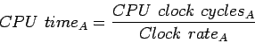
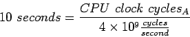
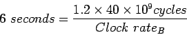
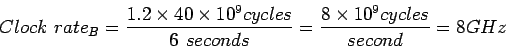

โปรแกรมที่เราสนใจใช้เวลาในการประมวลผลบนคอมพิวเตอร์ A เป็นเวลา 10 วินาที โดยคอมพิวเตอร์ A ทำงานที่ความเร็วสัญญาณนาฬิกา 4 GHz สมมุติว่าเรากำลังทำการออกแบบคอมพิวเตอร์ B ที่จะสามารถทำงานประมวลผลบนโปรแกรมเดียวกันได้โดยใช้เวลาเพียง 6 วินาที การออกแบบสามารถลด Clock cycle time ได้ แต่จะกระทบต่อจำนวนวงรอบของสัญญาณนาฬิกาที่ทำงานในโปรแกรมเป็นอัตรา 1.2 เท่า จงหาความเร็วสัญญาณนาฬิกาที่จะสามารถทำได้ตามความต้องการดังกล่าว
เริ่มจากการคำนวณจำนวนสัญญาณนาฬิกาสำหรับโปรแกรมที่ทำงานบนคอมพิวเตอร์ A
|  |
|  |
CPU time สำหรับคอมพิวเตอร์ B สามารถคำนวณได้จากสมการต่อไปนี้
|  |
|  |
ดังนั้นคอมพิวเตอร์ B จะต้องมีความเร็วสัญญาณนาฬิกาที่ 8 GHz